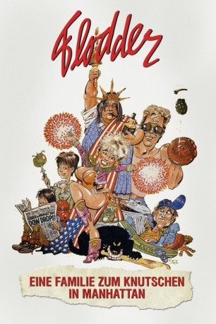

#6308 Flodder - Eine Familie zum Knutschen in Manhattan
 
 IMDB-Wertung: 5.5 / 10
IMDB-Wertung: 5.5 / 10  Metascore: 0
Metascore: 0 
Die Flodders treiben es immer noch ziemlich kunterbunt in der gemütlich zum Abfallhaufen degradierten Prachtvilla. Aber die Stadtverwaltung zeigt den Humor der Verzweiflung und schickt sie im Rahmen eines Austauschprogrammes zwischen der holländischen und der amerikanischen Regierung nach New York. In New York angekommen schütteln sie den hysterischen Sozialarbeiter Sjakie am Flughafen ab. Und dort werden sie auch direkt mit einer russischen Ärztedelegation verwechselt. Es beginnt ein turbulenter und unverwechselbar chaotischer Streifzug durch New York. Als Betreiber eines Nachtclubs stellen sie eine Gefahr für den amerikanischen Präsidenten und die Stabilität der amerikanischen Moral dar. Im Grunde aber eigentlich doch ein ganz normaler Urlaub für die Flodders, oder?
Jahr: 1992
Dauer: 120 Minuten
FSK: 12
Land: Niederlande Studio: Highlight FilmTonspuren:
Untertitel: Deutsch,
Auflösung: 1080p (1920x1080) Größe: 7823 MB
Genre: Komödie
Regisseur: Dick Maas
Drehbuch: Luigi Bazzoni
Soundtrack:
Darsteller:
- Huub Stapel als Johnnie Flodder
 Jon Polito als Larry Rosenbaum
Jon Polito als Larry Rosenbaum- Lonny Price als Geoffrey
- Dan Frazer als President
 Colin Stinton als Jack
Colin Stinton als Jack- C.J. Byrnes als Russisch gedelegeerde
 Chuck Jeffreys als Annoying Negro #2
Chuck Jeffreys als Annoying Negro #2 Anibal O. Lleras als Mexicaanse dief
Anibal O. Lleras als Mexicaanse dief- David S. Lomax als Annoying Negro #3
- Jon Manfrellotti als Limousinebestuurder
- Ted Minos als White-Hat Mugger
 Vincent Pastore als Man zonder benzine
Vincent Pastore als Man zonder benzine- Susanne Severeid als Verpleegster #1
 Tony Sibbald als Chairman Roosevelt Foundation
Tony Sibbald als Chairman Roosevelt Foundation- Marla Sucharetza als Grondstewardess JFK
- Bram van der Vlugt als Nederlandse ambassadeur
- Nelly Frijda als Ma Flodder
- René van 't Hof als Zoon Kees Flodder
- Tatjana Simic als Dochter Kees Flodder
- Lou Landré als Jacques 'Sjakie' van Kooten
- Roger Robinson als Zwerver
- Mandy Negerman als Toet Flodder
- Melle de Boer als Henkie Flodder
- Reathel Bean als Edwards
- Deirdre Harrison als Jacky
- Amanda Redington als Dorothy Rosenbaum
- Dick Rienstra als Captain
- Bert André als Neighbour Neuteboom
- Madison Arnold als Portier
- Eric Beekes als Purser
- Inge Beekman als Vrouw Alderman
- Hans Beijer als Beveiligingsbeamte vliegveld
- Ron Bembrich als Receptionist Plaza / Woordvoerder
- Bob Biddiscombe als Dr. De Palma
- Renata Boston als Basketbalmeisje #1
- Chip Bray als Agent in keuken
- Jim Cook als Assistent-chirurg #1
- Anna Crott als Stewardess
- Gene D'Onofrio als Psychiater
- Hilde de Mildt als Stewardess
- Ed De Pasquale als Taxichauffeur in NY
- Jan Doense als Voetganger in New York
- Joep Dorren als Slimme taxichauffeur
- Andy Duppin als Annoying Negro #1
- Dave Durham als Gast Moulin Rouge #1
- Ian Elliot als Receptionist Small Hotel
- Craig Eubanks als Spugende man
- Nick Flynn als Doorspittend agend
- Joe Gioco als Russian Doctor
- Martha Hawley als Dr. Black
Datei: X:\3-Trilogie(A-F)\Flodder\Flodder - Eine Familie zum Knutschen in Manhattan (1992, FSK12, 1920x1080).mkv seit 07.06.2017
Festplatte: HD Collection-2(A-Z)-3(A-M)
 Alle Filme aus Gruppe '3-Trilogie(A-F)\Flodder'
Alle Filme aus Gruppe '3-Trilogie(A-F)\Flodder'